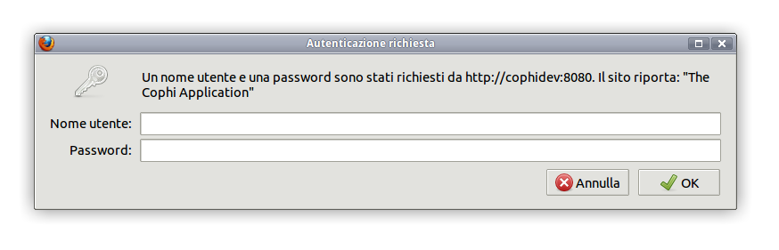
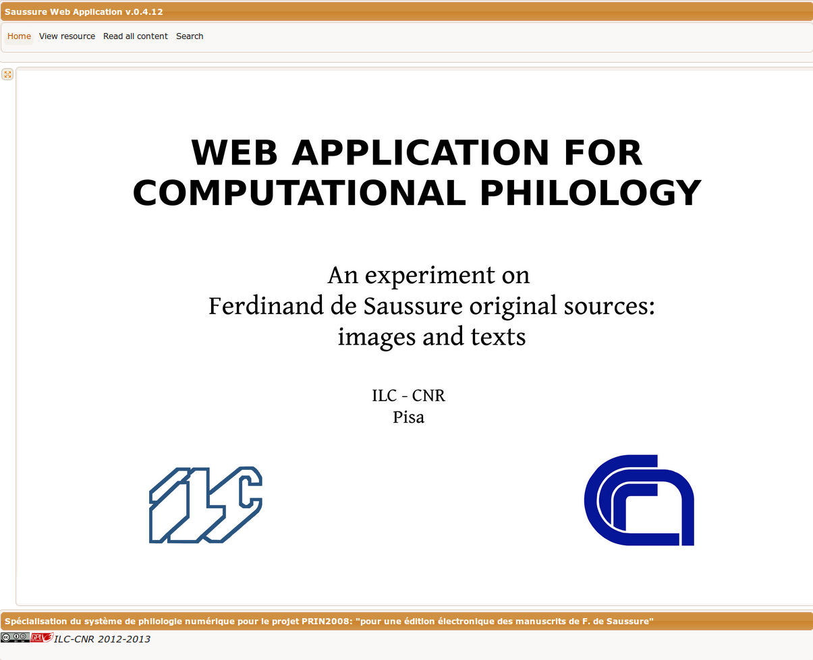
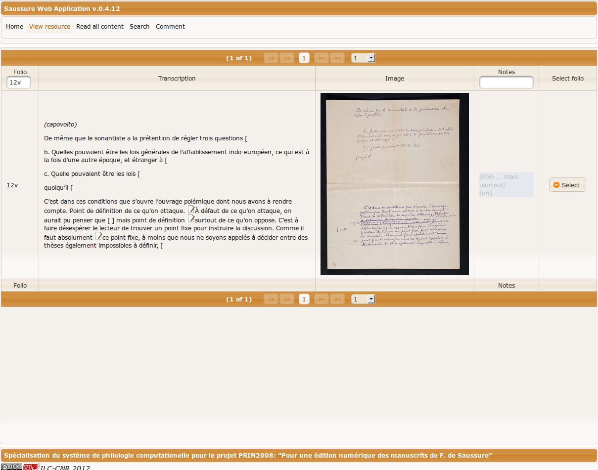
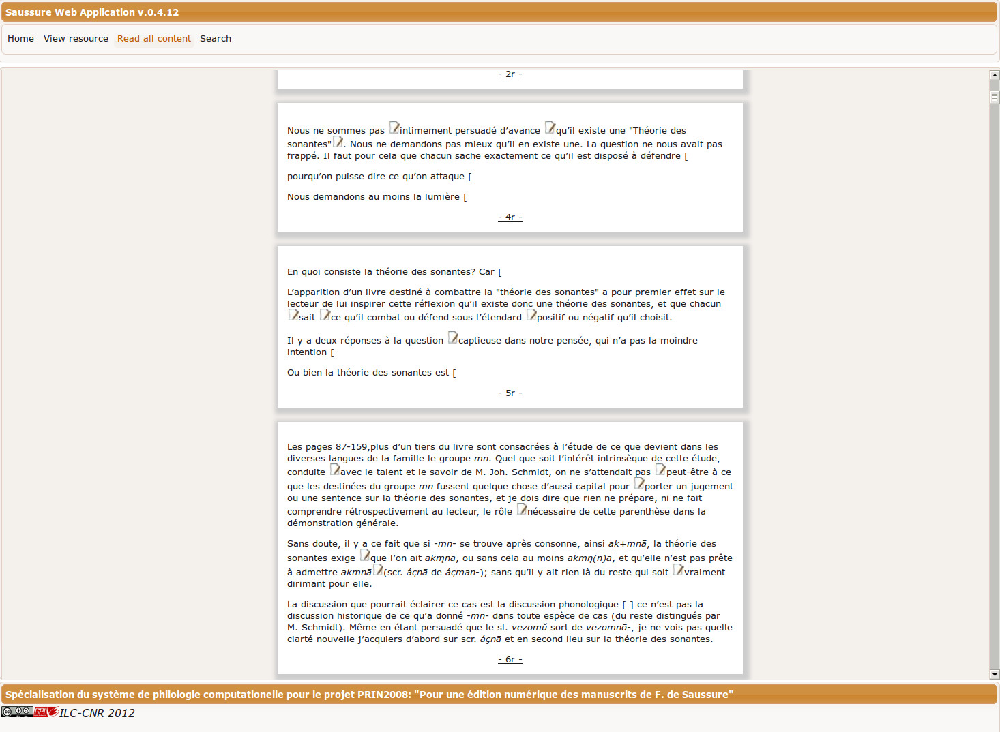
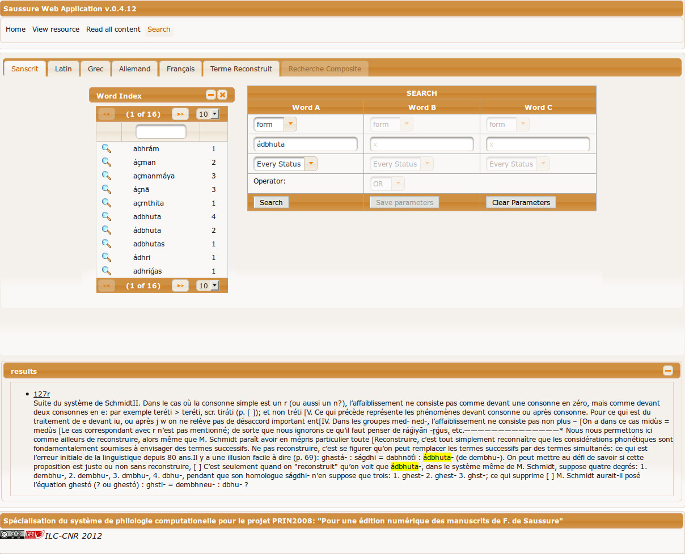
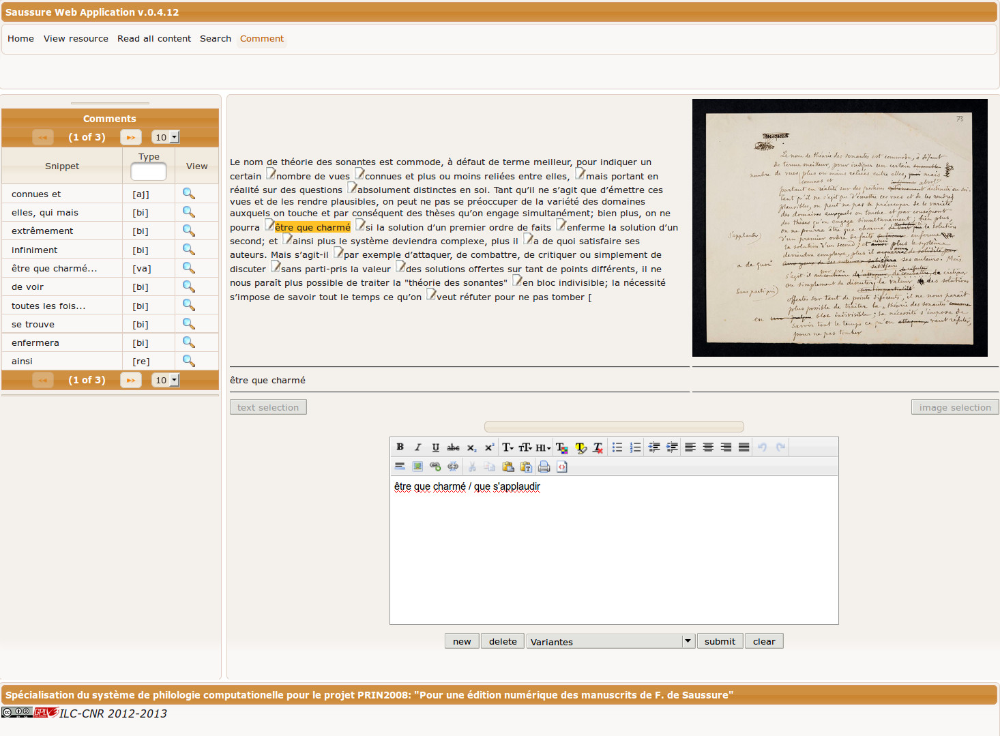

Andrea Bozzi, Simone Marchi, Angelo Mario Del Grosso
ILC - CNR
L'applicazione, in sviluppo presso l'Istituto di Linguistica Computazionale si configura come un'ambiente di editoria critica digitale di fonti manoscritte. La versione qui utilizzabile è stata semplificata al fine di comprendere i principali moduli di navigazione dei dati e di ricerca su un testo già edito di F. de Saussure.
Essa comprende i seguenti componenti:
Browser consigliato: Mozilla Firefox (www.getfirefox.com). L'utilizzo di altri browser potrebbe alterare le caratteristiche grafiche dell'interfaccia.
L'applicazione è raggiungibile digitando il seguente indirizzo nella URL del browser web:
http://cophidev.ilc.cnr.it:8080/Saussure_Wapp/.
Essa prevede un accesso protetto al sistema mediante login/password.
 |
Fig. 1 Finestra per l'immissione di login password |
Dopo avere effettuato l'accesso, si apre la pagina principale (Home).
 |
Fig. 1 - Home page |
I moduli attualmente presenti nella applicazione sono i seguenti:
Visualizza la schermata principale.
Visualizzazione dei folia con le relative trascrizioni.
Consente di digitare il numero del folio (recto o verso) e di visualizzarlo. Da sinistra verso destra si trovano:
 |
Fig. 2 Visualizzazione dei folia con le relative trascrizioni |
Per visualizzare il libro digitale è sufficiente selezionare il bottone Read all content.
Con un clic sul numero del folio (sottolineato) è possibile accedere direttamente alla vista dei commenti.
 |
Fig. 3 Visione del libro digitale |
Per accedere alla funzionalità di ricerca è sufficiente selezionare la voce di menù Search.
Di ogni lingua individuata nel testo (Sanscrito, Latino, Greco, Tedesco, Francese, termini ricostruiti da Saussure) è stato creato un indice alfabetico. La lente () consente di vedere i contesti (folia) della forma selezionata che viene evidenziata in giallo. E', inoltre, possibile filtrare i termini indicizzati digitando una stringa di caratteri nel riquadro bianco sopra l'indice.
 |
Fig. 4 - Finestra di ricerca con risultati evidenziati |
Da View resource si accede alla modalità annotazione dei folia tramite:
Si noti che è possibile, ma non è qui abilitata, l'inserimento e editing dei commenti.
 |
Fig. 5 Vista dei commenti |
[1] La versione attuale è redatta in lingua italiana. Seguirà a breve la versione in francese.